CSS3
CSS3 adalah Cascading Style Sheet versi ke 3, yaitu pengatur dan pengendali tampilan sebuah halaman blog/ web. CSS3 melakukan penataan terhadap komponen HTML maupun XHTML pada halaman web sehingga menghasilkan tampilan yang ramah dimata atau retina friendly. CSS versi ketiga dapat melakukan berbagai pemutakhiran terhadap kemampuannya beradaptasi dengan teknologi multimedia yang semakin modern.
Apa yang baru?
Berikut ini adalah beberapa hal baru yang akan kita pelajari pada CSS3:
- opacity
- pemberian warna menggunakan RGBa
- border radius
- box shadow
- text shadow
- fontface
- filter
- transition
- transformation
- Animation
CSS3 Cheat Sheet
Selain hal diatas, sebetulnya masih banyak lagi hal baru yang terdapat pada css, selengkapnya kalian bisa liat disini.
CSS3 Prefix
Karena CSS3 merupakan teknologi baru dan sebagian teknologi di dalamnya masih eksperimental, belum semua hal baru tersebut yang ada di dalam CSS3 dapat kita gunakan. Terutama di browser-browser yang sudah agak 'jadul' atau versi lama. Nah, untuk mengatasi kasus tersebut, kita harus menambahkan dulu sintaks prefix agar CSS3 dapat berfungsi dengan baik pada semua browser.
Berikut ini adalah prefix yang harus ditambahkan:
- Firefox : -moz-<properti-css3>
- Chrome & Safari : -webkit-<properti-css3>
- Opera : -o-<properti-css3>
- IE : -ms-<properti-css3>
Catatan: Sebaiknya untuk sintaks prefix, dituliskan semua karena kita tidak tahu browser apa dan versi keberapa yang user gunakan untuk mengakses halaman web kita.
Opacity
Digunakan untuk mengatur transparansi dari sebuah elemen.
sintaks:
opacity: <value>
Semakin kecil valuenya maka akan semakin transparan elemennya, jika valuenya 0 maka elemennya tidak terlihat.
contoh:
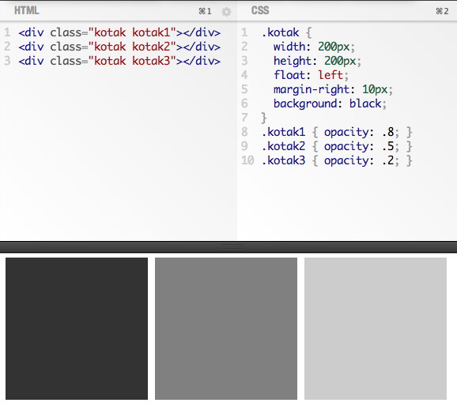RGBa
RGBa (Red Green Blue alpha) adalah Properti / Atribut untuk memberikan warna pada sebuah elemen dengan menambahkan parameter alpha sebagai transparansi-nya.
sintaks:
background-color: rgba(0,0,0,.5);
color: rgba(255,255,255,.7);
semakin kecil valuenya pada parameter alpha-nya maka akan semakin transparan.
Contohnya :
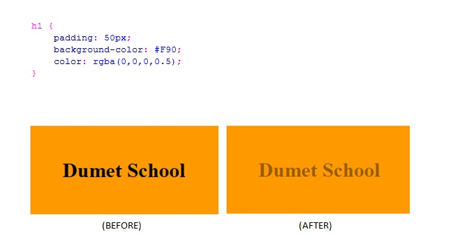Border Radius
Border radius digunakan untuk memberikan sudut-sudut kotak menjadi tumpul.
sintaks:
border-radius: <value>
semakin besar value yang diberikan, semakin tumpul sudutnya.
contoh:
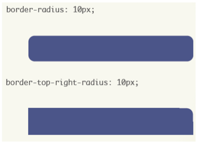Box Shadow
Digunakan untuk memberikan drop shadow / bayangan pada sebuah elemen.
sintaks:
box-shadow: <x-offset> <y-offset> <blur> <warna>
contoh:
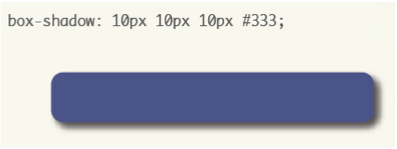Text Shadow
Digunakan untuk memberikan drop shadow / bayangan pada sebuah text.
sintaks:
text-shadow: <x-offset> <y-offset> <blur> <warna>
contoh:
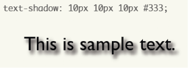font-face
Digunakan agar kita dapat mengganti font sesuai dengan keinginan kita tanpa memperdulikan apakah font tersebut ada di sistem operasi user atau tidak.
syaratnya kita harus punya dulu file-file font yang dibutuhkan yaitu: .eot, .woff, .ttf dan .svg
gunakan website fontsquirrel.com untuk mendownload font-font secara gratis.
contoh:
html
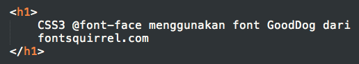css
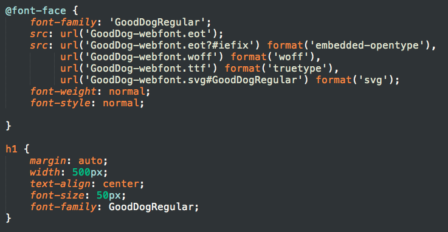hasil
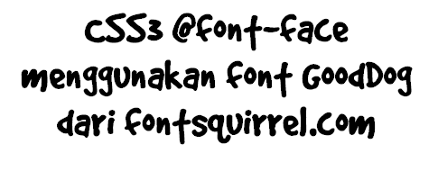Filter
Properti CSS3 yang digunakan untuk memberikan efek visual pada gambar, background atau border
Filter memiliki tipe-tipe yang dapat di atur antara lain :
Filter hue-rotate diaplikasikan sedikit berbeda dengan filter yang lainnya, karena ditentukan dalam derajat. Hal ini mungkin terasa aneh pada awalnya, tapi ketika kita membayangkan roda warna, maka menjadi cukup mudah untuk memvisualisasikan nilai hiu-rotate dan posisinya dalam lingkaran.
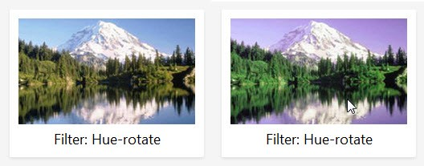Transformation
Digunakan untuk mentransformasi / melakukan perubahan pada sebuah elemen.
Perubahan yang dilakukan dapat berupa rotasi, skala, dan mengubah kemiringan.
Perubahan elemen yang dilakukan tidak mempengaruhi layout.
Rotasi
transform: rotate(<derajat>deg)
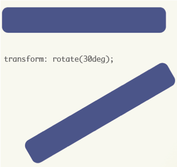Skala
transform: scale(<ukuran>) atau scale(<sumbuX>,<sumbuY>)
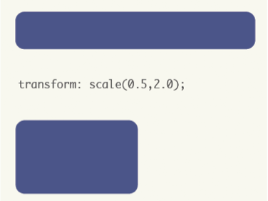Mengubah Kemiringan
transform: skew(<derajat>deg)
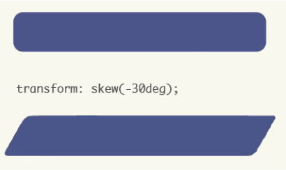Transition
Digunakan untuk transisi perubahaan keadaan pada sebuah elemen.
Perubahan keadaan yang dilakukan dapat berupa warna, ukuran, posisi, dll.
Perubahan tadi terlihat seperti animasi jika dipergunakan dengan tepat
cara penggunaan
- Deklarasikan keadaan awal sebuah elemen
- Deklarasikan keadaan akhir sebuah elemen, contohnya pada keadaan hover
- tambahkan properti/atribut transition pada selektor keadaan awal
sintaks
transition: <properti> <durasi> <timing/jenis transisi> <delay>
contoh:
transition: all 2s ease-in 0s
artinya transisikan semua keadaan (jika lebih dari satu properti yang berubah), selama 2 detik, dengan jenis ease-in dan delay selama 0 detik
tidak semua value harus ditulis, biasanya cukup dengan hanya menulis properti dan durasi-nya saja
daftar properti yang dapat di-transisi-kan:
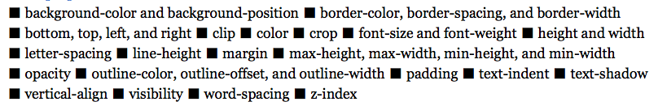Contohnya :
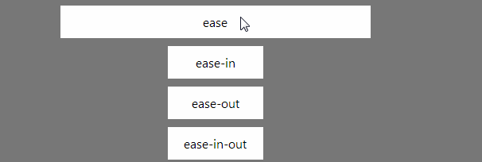Animation
Angka-angka dalam tabel dibawah ini menentukan versi browser yang sepenuhnya mendukung properti keyframes dan animation :
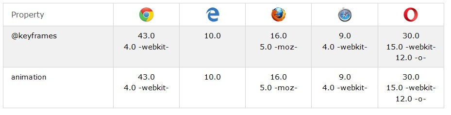Properti yang ada pada animation
- animation name :
Nama dari elemen yang akan dibuat menjadi animasi - animation-duration :
Mengatur lamanya waktu yang dibutuhkan untuk menjalani satu siklus animasi, dalam satuan second - animation-timing-function :
Mengatur bagaimana transisi melewati keyframe - animation-delay :
Mengatur jeda waktu antara saat di-load-nya suatu elemen HTML dengan awal mula animasi - animation-iteration-count :
Mengatur berapa kali animasi dijalankan - animation-direction :
Mengatur apakah animasi akan berjalan bolak-balik atau satu arah.
aturan penulisan :
animation-name animation-duration animation-timing-function animation-delay animation-iteration-count animation-direction;
contoh : animation: example 5s linear 2s infinite alternate;
contoh penggunaan animation :
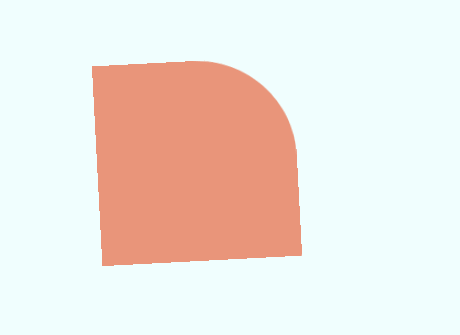Latihan 5a - Kompilasi semua materi
Hasil yang diperoleh adalah seperti ini:
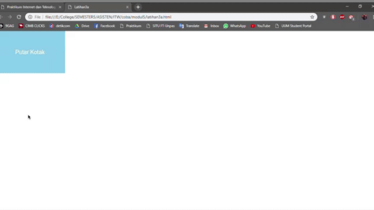tulis script HTML berikut ini:
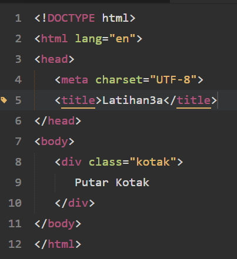simpan dengan nama:
L5a<NRP>.htmlbuat file css baru dengan nama:
L5a<NRP>.csstambahkan spesifikasi berikut pada file css:
.kotak
- lebar 250px
- tinggi 150px
- ? : skyblue
- line height: (isi agar tulisan berada ditengah-tengah)
- ubah agar text rata tengah
- warna tulisan putih
- jenis huruf arial
- ukuran huruf 20px
- posisi fixed
- top dan left ?
- tambahkan properti css3 transition: all 2s ease
- tambahkan prefix untuk semua browser pada properti transition
.kotak:hover
- warna background salmon
- ukuran font 60px
- left 200px
- top 50px
- border radius 2000px
- box-shadow: 0 0 500px rgba(0,0,0,1)
- tambahkan prefix untuk semua browser pada properti box-shadow
- transform: rotate(?)
- tambahkan prefix untuk semua browser pada properti transform
Persiapan Latihan 5c - 5d
- Copy-kan file html dan css berikut ini ke dalam folder baru dan beri nama foldernya dengan latihan5
- Download dan Ekstrak file .zip berikut ini kedalam folder yang sudah kalian buat.
Latihan 5b - Animation
Hasil yang diperoleh adalah seperti ini:
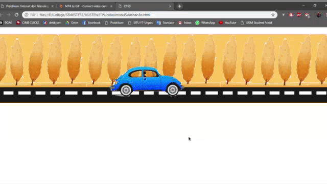Tulislah script HTML berikut
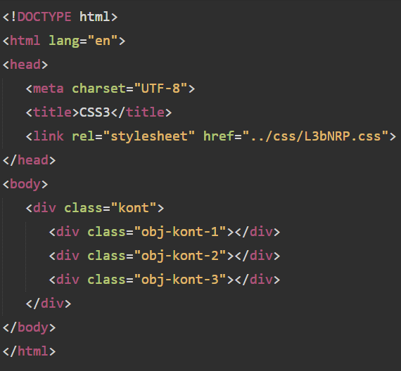Simpan dengan nama:
L5b<NRP>.htmlL5b<NRP>.css
.kont
- tambahkan lebarnya 98.8%
- tambahkan tingginya 280px
- warna background #FFC85E
- margin atas 20px bawah 50px
- margin kiri kanan auto
- position : ?
.obj-kont-1
- tambahkan lebarnya : ?
- tambahkan tingginya 60px
- tambahkan background-image (images/jalan.png)
- tambahkan background-position : ?
- tambahkan background-repeat : ?
- tambahkan posisi absolute
- tambahkan top 230px
- z-index : 2
- tambahkan script berikut

.obj-kont-2
- lebarnya : 100%
- tingginya 500px
- gunakan pohon.png sebagai background-image
- background-position bottom
- background-repeat : ulang sesuai sumbu x
- posisi : ?
- top : ?
- z-index : ?
- Tambahkan script seperti gambar di bawah ini setelah z-index

.obj-kont-3
- lebar : 50px
- tinggi : 50px
- gunakan mobil.png sebagai background-image no-repeat bottom
- posisi : ?
- top 100px
- left 40%
- z-index : 3
- Tambahkan script seperti gambar di bawah ini setelah left
- 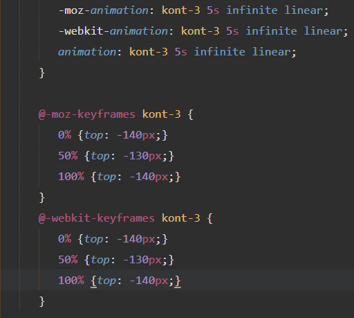
Latihan 3c -Transisi Thumbnail
Hasil yang diperoleh adalah seperti ini:
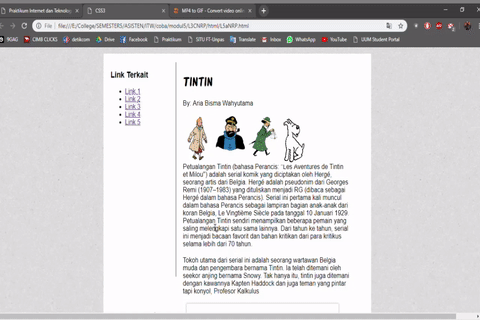namakan latihan dengan
L5c<NRP>.htmlL5c<NRP>.css
tambahkan tag <p></p> pada file HTML setelah tag <img> yang berada di dalam tiap-tiap div.kotak dengan isi sebagai berikut:
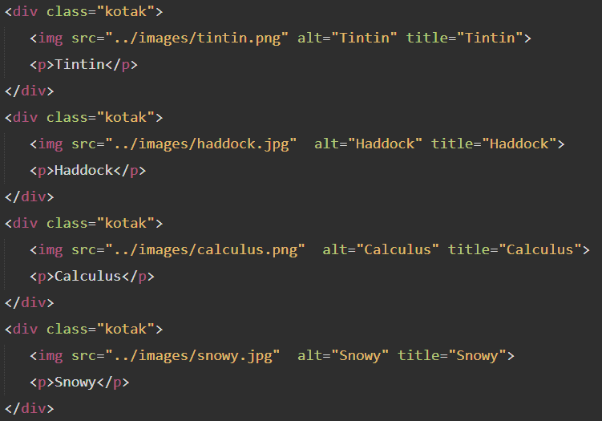modifikasi file css dengan spesifikasi dibawah ini:
.kotak
- tambahkan posisi relative
.kotak img
- tambahkan border 1px solid dan berwarna putih
- tambahkan posisi relative
- transition: all .3s ease
- tambahkan prefix untuk semua browser pada properti transition
.kotak:hover img
- tambahkan border 5px solid dan berwarna putih
- box-shadow: 0 0 10px rgba(0,0,0,.5);
- tambahkan prefix untuk semua browser pada properti box-shadow
- z-index : ?
- transform: scale(1.3)
- tambahkan prefix untuk semua browser pada properti transform
.kotak p
- jenis font: arial
- warna background rgba(0,0,0,.3);
- lebar 130%
- padding atas bawah 10px, kiri kanan 0
- teks rata tengah
- warna tulisan putih
- posisi absolute
- bottom -100px, left -7px
- opacity: ?
- z-index : ?
- transition: all 10s ease
- tambahkan prefix untuk semua browser pada properti transition
.kotak:hover p
- bottom : ?
- opacity : 1
- kanan : -18px;
.gambar
- sesuaikan width dan heightnya
- padding kanan : 20px
- posisi : relative
- border : 5px solid white
- box shadow : 0 0 5px rgba(0,0,0,.3)
- tambahkan prefix untuk box shadow
- cursor: pointer
- overflow: ?
.gambar img
- lebar : 450px
.gambar:hover .caption
- opacity: ?
- top : 0px
.caption
- opacity: 0
- posisi : ?
- top : -100%
- lebar : 100%
- tinggi : 100%
- background : rgba(0,0,0,0.4)
- warna : putih
- font-family : arial
.caption h3, .caption p
- padding atas bawah : ?
- padding kanan kiri : 20px;
- margin atas bawah : 0
- posisi : relative
- kiri : 0
.gambar:hover h3, gambar:hover p
- kiri : 0
.caption h3
- margin atas : ?
- background : hitam
Latihan 5d
Hasil yang diperoleh adalah seperti ini:

modifikasi file html dan css pada latihan 5c, simpan dengan nama :
L5d<NRP>.htmlL5d<NRP>.css
modifikasi file css dengan spesifikasi dibawah ini:
#content h1
- tambahkan text shadow:
0px 0px 4px #aaa,
-1px -5px 4px #fc3,
2px ... 6px #fd6,
-30px -15px ... #f80,
4px -20px 10px #920;
.kotak:hover
- tambahkan filter : saturate(10%)
- tambahkan prefix untuk semua browser pada proferti filter
.gambar:hover img
- tambahkan filter: sepia(10%)
- tambahkan prefix untuk semua browser pada properti Filter
- tambahkan transform: scale(1.1)
- tambahkan prefix untuk semua browser pada properti transition
.caption
- tambahkan transition: ? .4s ease-in;
- tambahkan prefix untuk semua browser pada properti transition
- tambahkan trasition-delay: .5s
- tambahkan prefix untuk semua browser pada properti transition-delay
.gambar img
- tambahkan transition: all 1.5s
- tambahkan prefix untuk semua browser pada properti transition
.caption h3, .caption p
- tambahkan transition: all .4s
- tambahkan prefix untuk semua browser pada properti transition
.caption p
- tambahkan transition-delay: 1.2s
- tambahkan prefix untuk semua browser pada properti transition-delay
.caption h3
- tambahkan transition-delay: 1s
- tambahkan prefix untuk semua browser pada properti transition-delay